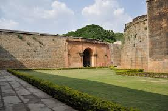

Bangalore Fort
Bangalore Fort was originally built as a mud fort in 1537 by Kempegowda I, the founder of Bangalore. It was later reinforced with stone by Hyder Ali in 1761. The fort played a crucial role during the Anglo-Mysore Wars and witnessed battles between the British and Tipu Sultan's forces.
Today, only a small portion of the original fort remains, including the Delhi Gate and some bastions. The fort stands as a historical landmark, showcasing Indo-Islamic architecture and Bangalore's rich past.